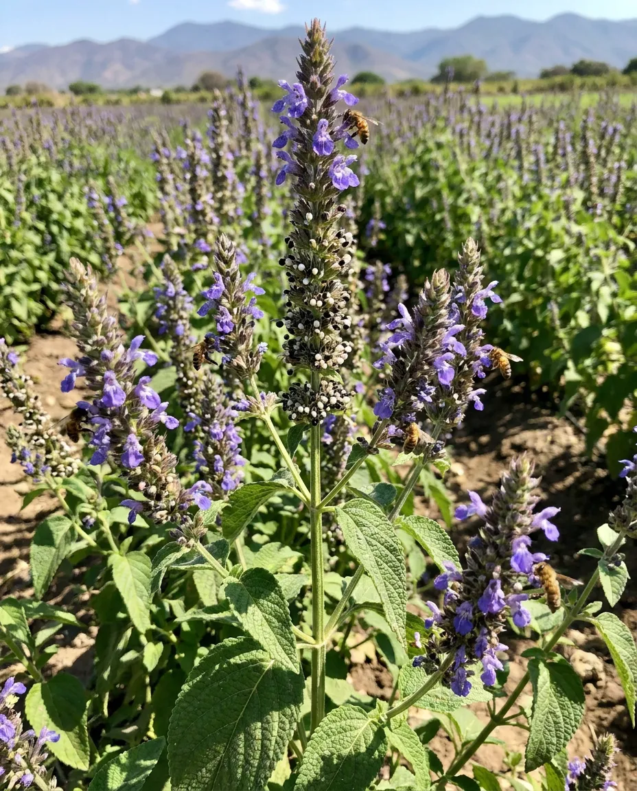
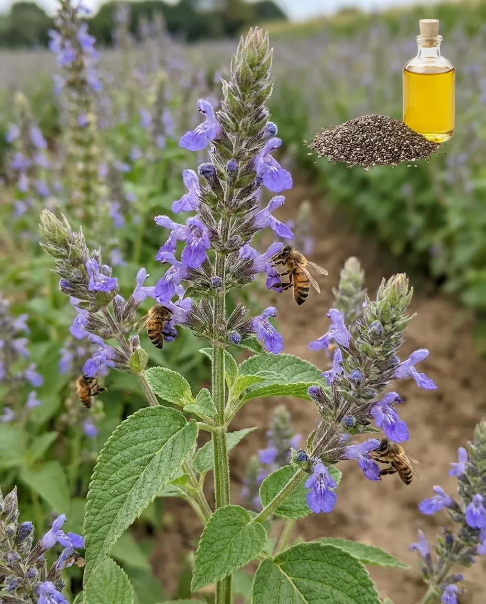

ЧИА
Чиа белая, или Шалфей испанский - растение семейства Яснотковые, вид рода Шалфей. Чиа представляет собой перспективную альтернативную масличную культуру, обладающую значительным потенциалом использования. В странах Латинской Америки, прежде всего в Мексике, и на юго-западе США семена растения активно используются в пищевой промышленности.
Обладая высокой пищевой ценностью, семена чиа могут использоваться для приготовления разнообразных блюд и напитков, перерабатываться в муку. Кроме того, масло, получаемое из семян чиа, применяется в производстве красок.
Как и многие растения рода Шалфей (мята, мелисса, пустырник, шалфей), Чиа является перспективным медоносом.

Направления селекции
- Нейтральный фотопериодизм
- Скороспелость
- Холодостойкость
- Устойчивость к полеганию
- Устойчивость к осыпанию
- Дружность созревания
